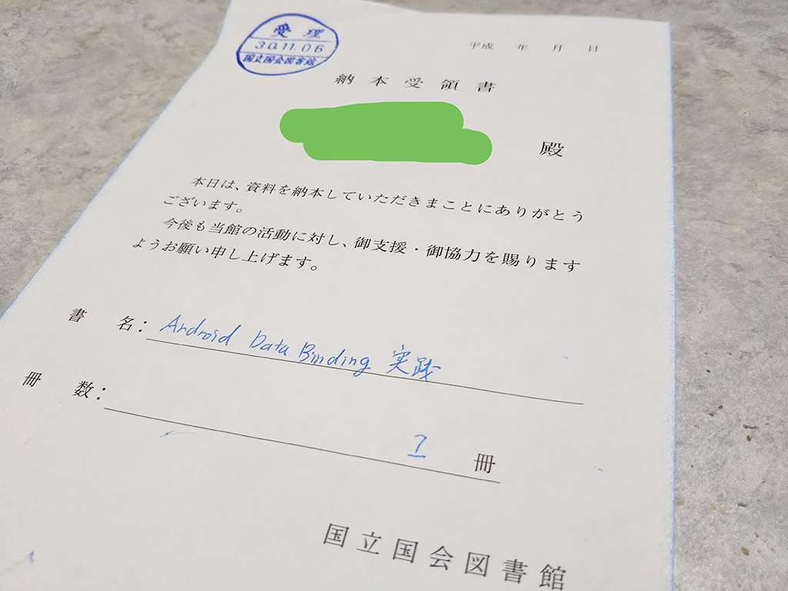

技術書典5で配布した本を【私も】国立国会図書館に納本した
2018-11-06 21:21:05 +0900 JST
Categories: Android
きっかけはこの記事。
これを見て、せっかくなので私も納本しにいきました。
30日過ぎてるけど
これまたせっかくなので、郵便ではなく直接国立国会図書館まで出向いて行きました。
入館証を受け取ったら、割とすぐの場所に納本受付所がありました。
そこで1枚受領書を書いたらハイ終わり。
意外とあっけなく納本が終わりました。

今回は寄贈にしました。
ホームページによると 納入出版物代償金 というのがあるらしく、オンデマンドで15冊ぐらい売った実績があれば、本を買い取ってくれるという制度もあるようです。
Q&A―企業・団体、個人｜国立国会図書館―National Diet Library
今回のこの納本含め、技術書典5に参加できて本当に良かったと感じています。どうやら技術書典6も計画しているようなので、またサークル側として参加してみたいですね！